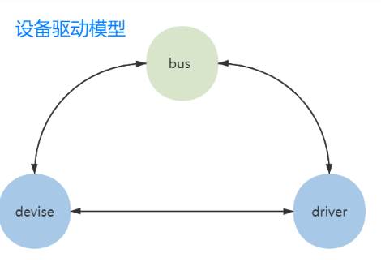
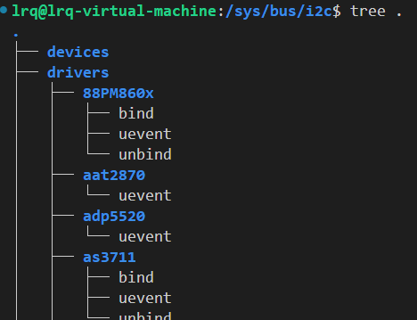
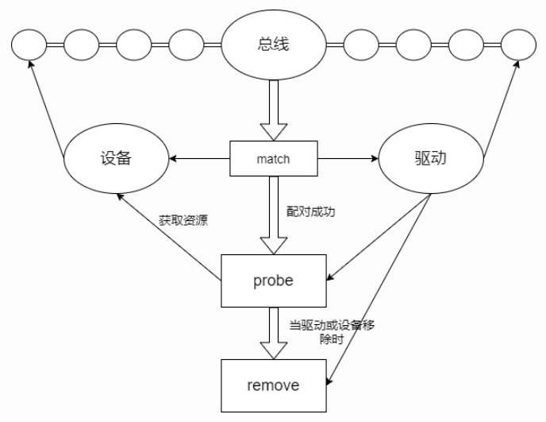
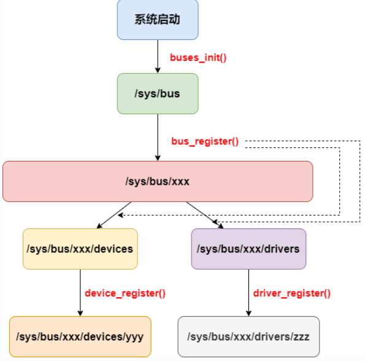

Linux设备驱动模型
简介
Linux设备驱动模型是内核中用于统一管理硬件设备、驱动程序和总线关系的核心框架。它通过一系列抽象结构（如struct device、struct driver、struct class、struct bus_type等）构建了一个层次化的设备拓扑，使内核能够动态管理设备的生命周期（如热插拔、电源管理），并为用户空间（通过 /sys）提供标准化的设备信息接口。
设备驱动框架和设备驱动模型不是一个东西，前者指的是GPIO、Input、Pinctl等子系统，而后者主要是Linux内核对于驱动开发中的一种设计模式
Linux设备驱动模型的核心思想是把我们编写的驱动代码进行分层解耦：
- 设备：提供硬件资源
- 驱动：使用设备提供的硬件资源进行初始化等操作
- 总线：将设备和驱动匹配起来

任何设备都挂在在某个总线上，即使物理上没有总线，也要虚拟出来个总线（platform）
核心目标
- 统一管理硬件：无论设备是 PCI、USB、I2C 还是platform设备，都通过一致的接口管理
- 支持动态事件：热插拔、电源状态切换（休眠/唤醒）等
- 用户空间交互：通过
sysfs 文件系统（/sys）暴露设备属性和配置
- 自动匹配驱动：设备与驱动通过总线或类机制自动绑定
设备驱动模型的核心组件
Linux的设备驱动模型框架中，对于设备、驱动、总线有很多派生类，这里只列出其最原始的基类的代码
kobject
1
2
3
4
5
6
7
8
9
10
11
12
13
14
15
16
17
| struct kobject {
const char *name;
struct list_head entry;
struct kobject *parent;
struct kset *kset;
struct kobj_type *ktype;
struct kernfs_node *sd;
struct kref kref;
#ifdef CONFIG_DEBUG_KOBJECT_RELEASE
struct delayed_work release;
#endif
unsigned int state_initialized:1;
unsigned int state_in_sysfs:1;
unsigned int state_add_uevent_sent:1;
unsigned int state_remove_uevent_sent:1;
unsigned int uevent_suppress:1;
};
|
作用：
可以通过以下API创建一个Kobject对象及目录
1
2
|
led_device->kobj = kobject_create_and_add("led-ctl-status", NULL);
|
- 第二个参数代表当前Kobject对象的父对象，NULL说明它没有父对象，所以就被创建在
/sys目录下了
attribute
总线、设备和驱动中的各个attribute成员变量则对应sysfs中的1个文件，attribute会伴随着show()和 store()这两个函数，分别用于读写该attribute对应的sysfs文件
1
2
3
4
5
6
7
8
9
10
11
12
13
14
15
16
17
18
19
20
21
22
23
24
25
26
27
28
29
| struct attribute {
const char name;
umode_t mode;
#ifdef CONfiG_DEBUG_LOCK_ALLOC
bool ignore_lockdep : 1;
struct lock_class_key *key;
struct lock_class_key skey;
#endif
};
struct bus_attribute {
struct attribute attr;
ssize_t (*show)(struct bus_type *bus, char *buf);
ssize_t (*store)(struct bus_type *bus, const char *buf, size_t count);
};
struct driver_attribute {
struct attribute attr;
ssize_t (*show)(struct device_driver *driver, char *buf);
ssize_t (*store)(struct device_driver *driver, const char *buf,
size_t count);
};
struct device_attribute {
struct attributeattr;
ssize_t (*show)(struct device *dev, struct device_attribute *attr,char *buf);
ssize_t (*store)(struct device *dev, struct device_attribute *attr,const char *buf, size_t count);
};
|
sysfs中的目录来源于bus_type、device_driver、device的kobject，而目录中的文件则来源于attribute
1
2
3
4
5
| static struct kobj_attribute led_ctl_attribute =
__ATTR(led_ctl, 0664, led_ctl_show, led_ctl_store);
sysfs_create_file(led_device->kobj, &led_ctl_attribute.attr)
|
设备
/sys/devices目录记录了系统中所有与驱动匹配了的设备（实际上是内核中的struct device中Kobject创建的 ），此外还有另一个目录/sys/dev记录所有的设备节点， 但实际上都是些链接文件，同样指向了devices目录下的文件
- 定义：挂载在某个总线上的具体设备，如I2C传感器、USB设备、platform设备…它包含了一个设备的一些关键属性，比如：设备名、设备号、设备属于的类、总线、父设备…
1
2
3
4
5
6
7
8
9
10
11
12
13
14
15
16
17
18
19
| struct device {
const char *init_name;
struct device *parent;
struct bus_type *bus;
struct device_driver *driver;
void *platform_data;
void *driver_data;
struct device_node *of_node;
dev_t devt;
struct class *class;
void (*release)(struct device *dev);
const struct attribute_group **groups;
struct device_private *p;
........
};
int device_register(struct device *dev);
void device_unregister(struct device *dev);
|
struct device是所有设备的通用抽象基类，Linux内核还提供了许多其他的设备类，比如platform_device、i2c_client等，用于针对特定总线或设备类型进行扩展
struct device及其子类与struct cdev不属于同一体系，前者负责对硬件资源的抽象表示，属于Linux设备驱动模型。而后者主要用于提供与用户空间交互的接口。所以驱动代码里，可能会同时出现这2种设备。
驱动
注册了的驱动记录在/sys/bus/<bus>/drivers
- 定义：与特定设备相关的软件，负责初始化该设备以及提供一些操作该设备的操作方式
1
2
3
4
5
6
7
8
9
10
11
12
13
14
15
16
17
18
19
20
21
| struct device_driver {
const char *name;
struct bus_type *bus;
struct module *owner;
const char *mod_name;
bool suppress_bind_attrs;
const struct of_device_id *of_match_table;
const struct acpi_device_id *acpi_match_table;
int (*probe) (struct device *dev);
int (*remove) (struct device *dev);
const struct attribute_group **groups;
struct driver_private *p;
};
int driver_register(struct device_driver *drv);
void driver_unregister(struct device_driver *drv);
|
内核针对具体的总线，为该类派生了许多子类，比如platform_driver, i2c_driver…
- 关键函数：
- probe：设备和驱动匹配后，自动调用该函数，用来对设备初始化
- remove：设备被拔出或者重启时被调用
总线
总线代表着同类设备需要共同遵守的工作时序，是连接处理器和设备之间的桥梁
注册了的总线位于sys/bus目录下，每个目录中又包含devices和drivers2个目录，分别记录挂载在该总线的设备和驱动

1
2
3
4
5
6
7
8
9
10
11
12
13
14
15
16
17
18
19
| struct bus_type {
const char *name;
const struct attribute_group **bus_groups;
const struct attribute_group **dev_groups;
const struct attribute_group **drv_groups;
int (*match)(struct device *dev, struct device_driver *drv);
int (*uevent)(struct device *dev, struct kobj_uevent_env *env);
int (*probe)(struct device *dev);
int (*remove)(struct device *dev);
int (*suspend)(struct device *dev, pm_message_t state);
int (*resume)(struct device *dev);
const struct dev_pm_ops *pm;
struct subsys_private *p;
};
|
struct bus_type是总线的唯一类，具体的总线类型也属于该类，比如platform_bus，i2c_bus，只不过name和那些函数指针不同
- 关键函数：
match()：通过设备名称或设备树兼容性（of_match_table）匹配设备与驱动probe()：match匹配成功后，会先调用总线的probe完成一些资源的初始化，再调用模块注册的proberemove()：设备移除时的资源释放逻辑
类
同一类的设备在 /sys/class 下有相同接口
1
2
3
4
5
6
7
8
9
10
11
12
13
14
15
16
17
18
19
20
21
22
23
24
| struct class {
const char *name;
struct module *owner;
struct class_attribute *class_attrs;
const struct attribute_group **dev_groups;
struct kobject *dev_kobj;
int (*dev_uevent)(struct device *dev, struct kobj_uevent_env *env);
char *(*devnode)(struct device *dev, umode_t *mode);
void (*class_release)(struct class *class);
void (*dev_release)(struct device *dev);
int (*suspend)(struct device *dev, pm_message_t state);
int (*resume)(struct device *dev);
...
};
extern struct class * __class_create(struct module *owner,
const char *name,
struct lock_class_key *key);
extern void class_destroy(struct class *cls);
|
- 类是对于设备的一种high level抽象，按照功能可以对设备进行分类（区别于字符设备/块设备这种分类法），比如输入设备、LED设备、MISC设备、DRM设备…
- Linux内核引入类，是将其用作具有相同功能的一类设备的容器
总线-设备-驱动的协作


匹配的时机
在总线上管理着两个链表，分别管理着设备和驱动。Linux中设备和驱动的注册的各自独立的，当我们向系统注册一个驱动时，便会向驱动的管理链表插入我们的新驱动， 同样当我们向系统注册一个设备时，便会向设备的管理链表插入我们的新设备。
在插入的同时总线会执行一次bus_type结构体中match的方法对新插入的设备/驱动进行遍历匹配。在匹配成功的时候会调用驱动device_driver结构体中probe方法(通常在probe中获取设备资源，具体的功能可由驱动编写人员自定义)， 并且在移除设备或驱动时，会调用device_driver结构体中remove方法
匹配的方式
匹配的方式主要看该总线的match的实现，不同总线的 match() 函数逻辑不同：
- platform总线：比较设备名称（
platform_device.name）或设备树兼容性（.of_match_table）
- I2C 总线：匹配设备地址（
i2c_client.addr）和驱动支持的地址列表
- PCI 总线：检查 PCI 设备的厂商ID和设备ID是否在驱动的
id_table 中
设备树触发匹配的流程
- 设备树解析：内核启动时解析设备树（
.dts），为每个设备节点（Node）生成 struct platform_device
- 动态注册设备：调用
of_platform_populate() 将设备树节点注册为平台设备
- 匹配驱动：通过设备树节点的
compatible 属性与驱动的 .of_match_table 匹配